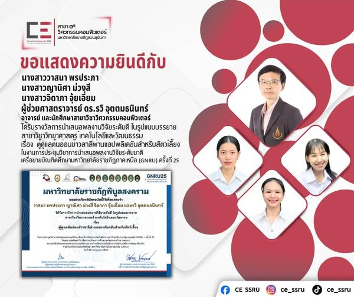

July 26, 2025 at Pibulsongkram Rajabhat University
The Department of Computer Engineering congratulates Asst. Prof. Dr. Rawi Uttamathanin (faculty member, Department of Computer Engineering), Miss Jidapa Jui-iam, Miss Wassana Pornprapha, and Miss Yanisa Muangsee.
Held on July 26, 2025 at Pibulsongkram Rajabhat University, the conference was organized by the Educational Administration Professional Development Association of Thailand, the Social Science Research Association of Thailand, and the Association of Technology and Innovation Professionals for Local Development in collaboration with all 8 member institutions of the Graduate Network of Northern Rajabhat Universities (GNRU).

ZoomClose ×